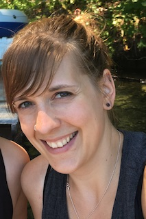

Hello! My name is Erin and I am an animal lover, adventure seeker, mountain biker and RN. I have been a nurse for 7 years and recently decided to change my career. I hope to persue a career in web development once I complete the UW Coding Bootcamp. I am not sure what direction I want to take with web development but hope that the answer to that will come after I learn more about coding.